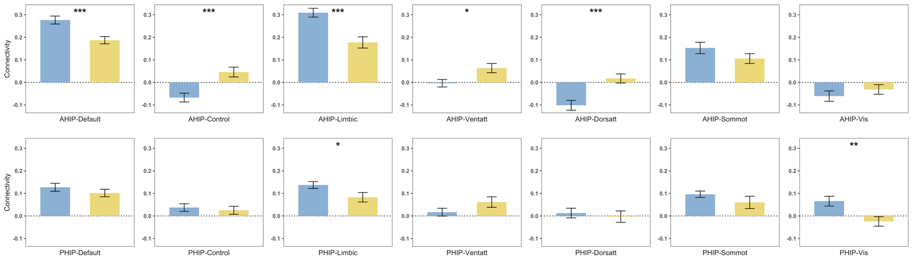
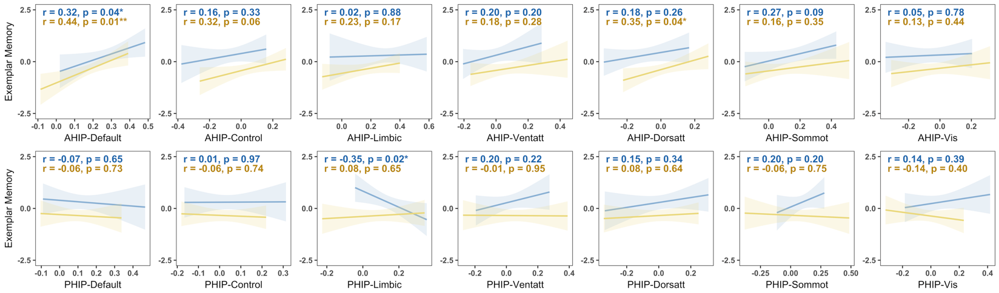

Tools for analyzing network-level functional connectivity from fMRI data using parcellated brain atlases. Designed for the Schaefer atlas but adaptable to other parcellation schemes.

AHIP/PHIP connectivity to 7 networks by age group, generated based onplot_compare outputs

Hippocampal-Network connectivity vs. memory performance by age group, generated based onplot_scatter outputs
Installation
Install from GitHub with devtools:
# install.packages("devtools")
devtools::install_github("shijing-z/fcnet")To load connectivity matrices from CONN toolbox .mat files, you also need NetworkToolbox:
install.packages("NetworkToolbox")Quick Start
library(fcnet)
# Package includes example data: 30 ROIs x 10 subjects
dim(ex_conn_array)
#> [1] 30 30 10
# Organize ROIs by network
indices <- get_indices(ex_conn_array)
# Network-level connectivity (Schaefer networks only)
indices_sch <- get_indices(ex_conn_array, roi_include = "schaefer")
# Results are data frames — one row per subject, one column per network
within <- calc_within(ex_conn_array, indices_sch)
between <- calc_between(ex_conn_array, indices_sch)
# ROI-to-network connectivity
ahip_df <- calc_conn(ex_conn_array, indices,
from = "ahip", to = c("default", "cont", "vis"))
# Visualize
plot_heatmap(ex_conn_array, indices)Core Workflow (with your own data)
The examples below show a typical analysis pipeline. Replace file paths, subject indices, and variable names with your own.
1. Load Data
Load connectivity matrices from CONN toolbox output (requires NetworkToolbox):
# rmat has ROI names in CONN toolbox .mat files — use it for organizing ROIs
r_mat <- load_matrices("data/conn.mat", type = "rmat")
# zmat (Fisher z-transformed)
z_mat <- load_matrices("data/conn.mat", type = "zmat")
# Optional: exclude subjects by index
# z_mat <- load_matrices("data/conn.mat", type = "zmat", exclude = c(3, 5))Or bring your own 3D array (ROI x ROI x subjects) with ROI names in dimnames.
2. Organize ROIs
# Extract ROI positions grouped by network
indices <- get_indices(r_mat)
# Schaefer networks only (exclude custom ROIs)
indices_sch <- get_indices(r_mat, roi_include = "schaefer")
# Group custom ROIs manually
indices_hip <- get_indices(r_mat,
manual_assignments = list(ahip = "hippocampus", phip = "hippocampus"))3. Calculate Connectivity
# Within-network: mean connectivity inside each network
within_df <- calc_within(z_mat, indices_sch)
# Between-network: each network averaged across all other networks
between_df <- calc_between(z_mat, indices_sch)
# Between-network: each unique network pair separately
pairwise_df <- calc_between(z_mat, indices_sch, pairwise = TRUE)
# User-defined: any ROI/network to any target(s)
ahip_df <- calc_conn(z_mat, indices,
from = "ahip", to = c("default", "cont", "limbic"))4. Visualize
All plot functions return ggplot objects for further customization.
# Connectivity matrix heatmap
plot_heatmap(z_mat, indices, subjects = demo$group == "YA", title = "Young Adults")
# Group comparison bar chart
within_df <- cbind(within_df, group = demo$group)
plot_compare(within_df,
conn_vars = c("within_default", "within_vis"),
group = "group")
# Connectivity-behavior scatter
ahip_df <- cbind(ahip_df, demo[c("group", "memory")])
plot_scatter(ahip_df, x = "ahip_default", y = "memory", group = "group")